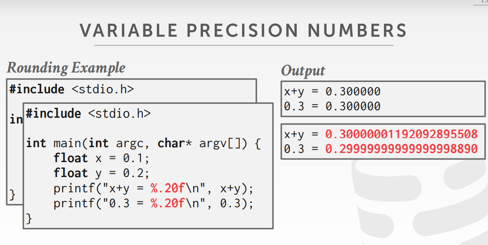

[CMU15445]:数据库存储
基于日志的page组织
在某些数据库中，page中放置的并不是单纯的tuple, 而是包含了对于数据库的改动，比如插入、删除、更新等
优点
当使用日志文件组织数据库时，进行的I/O都是顺序的，只需要在page后面不断追加记录即可
如果使用slot array方式存储tuple, 那么当tuple分散在不同的page时，就需要访问多个page，效率就会降低
此外，使用日志对数据库文件进行组织，便于回滚到以前的某一个状态，只需要沿着记录还原出原来的tuple即可
缺点
读取tuple时会比较慢，因为记录的是日志，如果想要获取某个tuple的状态，就必须要找到所有对这个tuple有改动的日志记录，
如果日志数量比较庞大，就会比较慢
解决方法
一种常见的优化方法是索引和压缩技术
首先使用索引快速找到针对于某一个tuple的修改记录
事实上，与一条tuple有关的所有记录，都可以被压缩成一条记录，采用压缩技术可以节省很大空间同时加快查找速度
上面的page可以被压缩成如下
sql中的数值存储类型
在sql中，小数可以使用定点存储也可以采用浮点存储，不同的厂商有不同的选取，但有两个结论是不变的
- 定点运算比浮点运算慢
- 定点运算的精度往往比较低，但是数值一定是准确的，浮点运算的精度比较高，但是数值可能不准确
sql中定点的数据类型如decimal, 浮点的数据类型如float, real/double
看下面的例子就知道了

原因是由于如今计算机中对于浮点运算只需要采用一条指令即可，而对于定点运算则需要进行一些程序运算
大对象存储
有时一个tuple中的某个属性可能无法完整的和其他tuple属性存储在一个page中，此时可以将其额外存储在一个page上，我们将其称为
overflow page
不同厂商对overflow page大小也有着不同规定，可以看上面的图片
在原tuple的对应位置可以存储overflow page的指针，这样当访问大对象时，可以通过指针来找到这些大对象
有的对象可能一个page 都放不下，此时可以采用链表的形式，在overflow page中留下一些位置来指向下一个overflow page，在其
它overflow page中继续存储
external vaule storage
这个词不大好翻译，姑且将其称之为外部存储
外部存储指的是将文件全部存储在外部磁盘中，这些磁盘不属于数据库，数据库只对他们有读取的权利，在数据库中只存放这些文件在操作系统文件系统中的位置，比如说相对路径
这个技术主要是针对于那些超大文件，比如视频网站中的视频文件，将那些视频文件放在数据库磁盘中无疑是浪费空间，因为
我们需要的往往是高性能数据库，数据库中的磁盘容量十分宝贵
blob
这些大型的文件通常被称之为blob(binary large object)
工作负载
数据库中有着两种不同的负载，下面主要介绍两种
OLTP(Online Transcation Processing)
OLTP指那些访问数据量小的操作，常见的电商交易中对订单以及交易记录的更新，更多情况下是对数据库中的文件进行写操作
OLAP( Online Analytical Processing)
这种操作往往意味着复杂的查询，更多的是读取操作
HTAP( Hybrid Transaction + Analytical Processing)
该情况指的是在一个数据库上同时使用OLAP和OLTP
它们对应的查询情况的复杂度以及读写情况如下图
数据库存储模型
N-ary model(NSM)
在该模型中，DBSM将一个tuple中的所有元素连续地存储在一个单独的page中，即“行存储”
优点
快速的删除，更新，插入
对于需要整个tuple的查询友好
缺点
对于需要某一列或者几列的一次大量地查询不友好
因为如果想要拿到tuple中的某一列，在该模型中，就得取一整个tuple,那么大量的不需要的tuple属性就会被拿到buffer
pool，污染缓冲池
对于OLTP来说，它往往需要次数密集地整个tuple的插入或者删除，这正好是NSM的适用场景，
相反，这种场景不适用于OLAP
分解存储模型(Decomposition Storage Model, DSM)
在该模型中，DBSM会将tuple中的属性连续地放在page中，即”列存储”
优点
在查询时减少了无用功，因为它仅仅读取那些需要的数据
空间被更好地压缩
因为一个page中存储的都是相同类型的数据，所以可以只存储数据与某个数据的差值，而没必要存储整个数据
缺点
在进行完整查询，删除，更新时都非常慢，因为tuple被分散在各个page，如果想要对一个tuple进行操作，就必须要要访问很多page
本博客所有文章除特别声明外，均采用 CC BY-SA 4.0 协议 ，转载请注明出处！